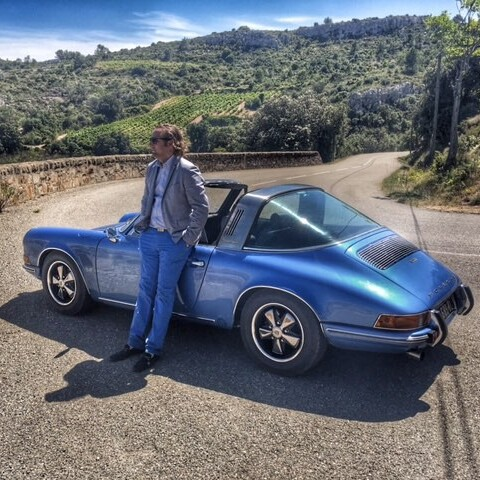
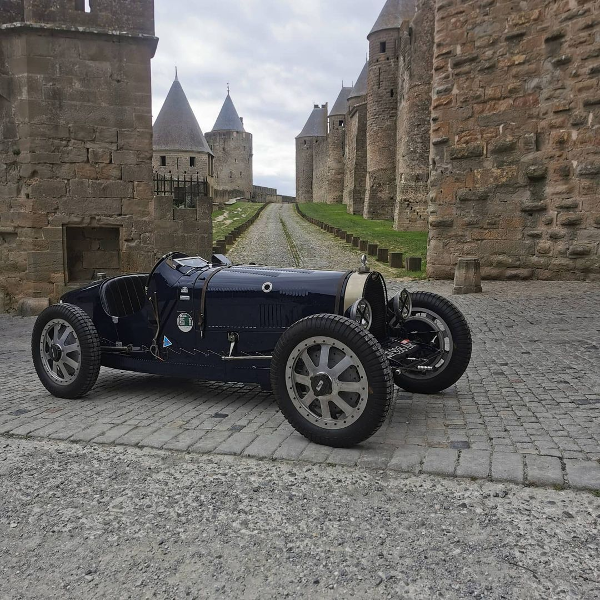

Né à DEVENTER en Hollande, Ernesto Kloostra baigne dès sa plus tendre enfance dans les vapeurs d’essence et d’huiles de vidange. Tout petit déjà, sa mère venait le chercher à l’école en Triumph STAG et son père, grand amateur de bolides, lui offre sa première voiture à l’occasion de son 6ème anniversaire. Il conduira cette Citroën Dyane dès l’âge de huit ans, à l’heure où d’autres commencent à peine à faire du vélo…
Implantée dans le sud de la France depuis 1996, sa famille restaure un ancien domaine viticole et développe un négoce de vins de la région vers la Hollande et l’Europe du Nord.
Cars for sale


contact
GARAGE ERNESTO'S
Domaine de la Magnanerie
34360 VILLESPASSANS
Tél./ Fax. 06 76 82 27 27
Mail : Ernesto's
Né à DEVENTER en Hollande, Ernesto Kloostra baigne dès sa plus tendre enfance dans les vapeurs d’essence et d’huiles de vidange. Tout petit déjà, sa mère venait le chercher à l’école en Triumph STAG et son père, grand amateur de bolides, lui offre sa première voiture à l’occasion de son 6ème anniversaire. Il conduira cette Citroën Dyane dès l’âge de huit ans, à l’heure où d’autres commencent à peine à faire du vélo…
Implantée dans le sud de la France depuis 1996, sa famille restaure un ancien domaine viticole et développe un négoce de vins de la région vers la Hollande et l’Europe du Nord.
Ernesto est associé à l’affaire mais son avenir est ailleurs. Passionné par l’automobile et les sports mécaniques, Ernesto suit une formation de mécanicien.
Après avoir accumulé de solides compétences dans tous les « métiers » de la mécanique, après avoir été importateur et préparateur de concepts cars, il crée en 2006 son propre atelier. Il se consacre aujourd’hui exclusivement à la restauration, la réparation, l’entretien et la vente de voitures anciennes. Son expérience l'amène à parcourir le monde à la recherche de la perle rare et participe à de prestigieux salons tel que l'Avignon Motor Festival avec son entreprise spécialisée dans la vente.
.jpg)